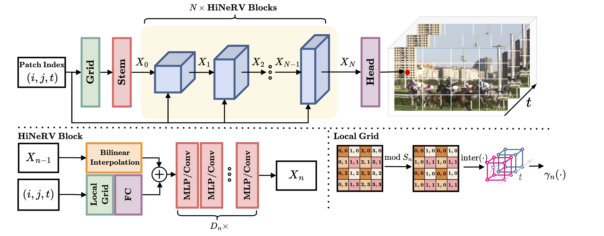
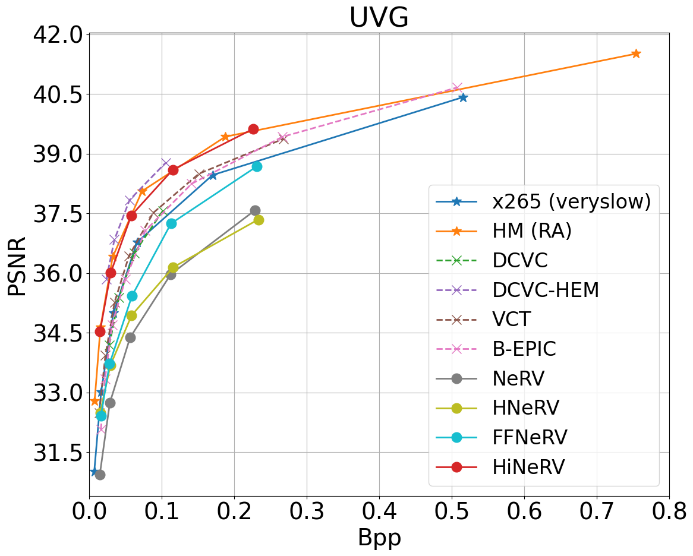
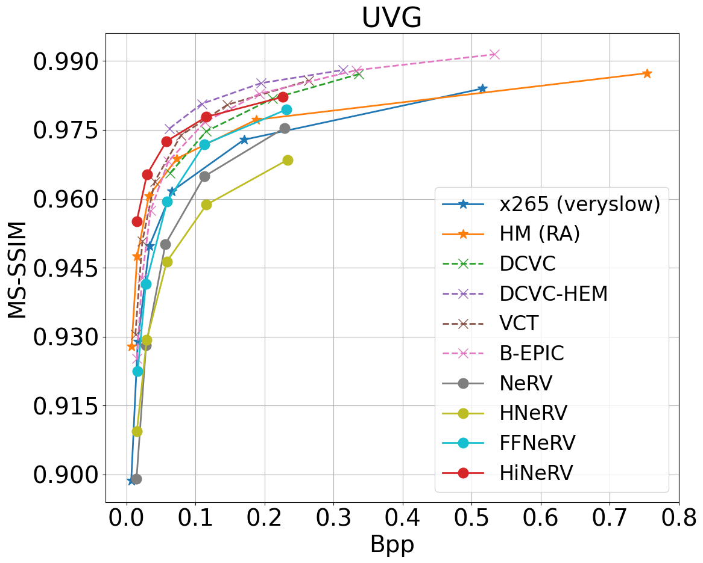
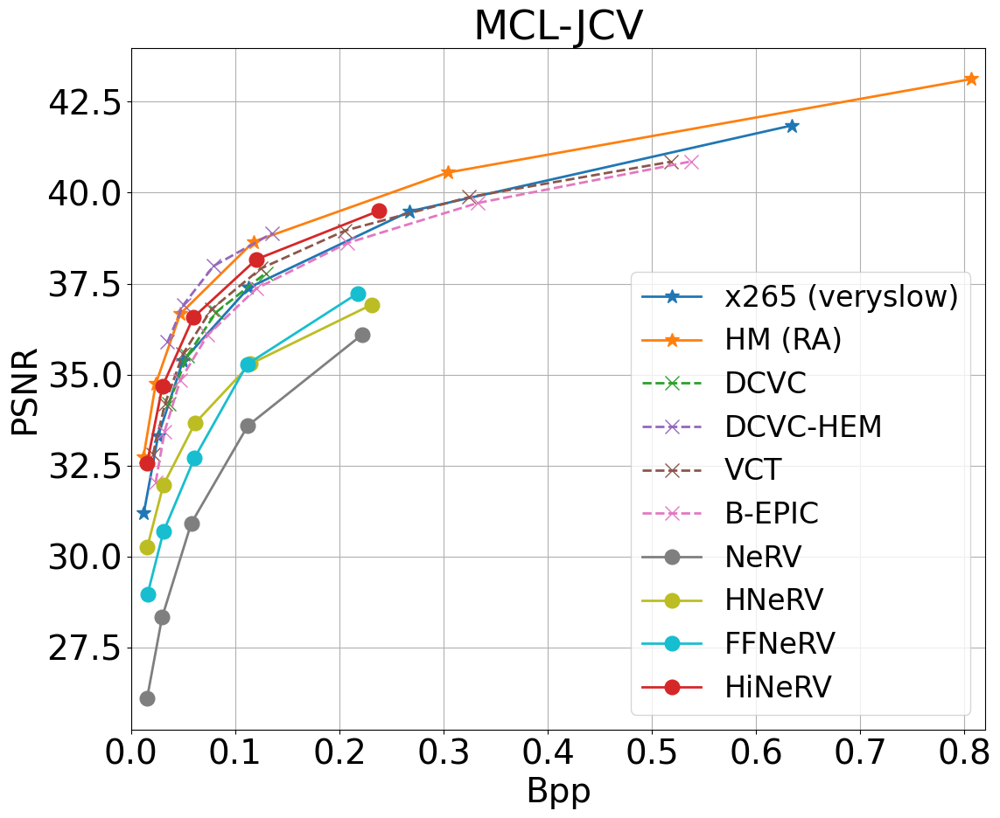

Abstract
Learning-based video compression is currently a popular research topic, offering the potential to compete with conventional standard video codecs. In this context, Implicit Neural Representations (INRs) have previously been used to represent and compress image and video content, demonstrating relatively high decoding speed compared to other methods. However, existing INR-based methods have failed to deliver rate quality performance comparable with the state of the art in video compression. This is mainly due to the simplicity of the employed network architectures, which limit their representation capability. In this paper, we propose HiNeRV, an INR that combines light weight layers with novel hierarchical positional encodings. We employs depth-wise convolutional, MLP and interpolation layers to build the deep and wide network architecture with high capacity. HiNeRV is also a unified representation encoding videos in both frames and patches at the same time, which offers higher performance and flexibility than existing methods. We further build a video codec based on HiNeRV and a refined pipeline for training, pruning and quantization that can better preserve HiNeRV's performance during lossy model compression. The proposed method has been evaluated on both UVG and MCL-JCV datasets for video compression, demonstrating significant improvement over all existing INRs baselines and competitive performance when compared to learning-based codecs (72.3% overall bit rate saving over HNeRV and 43.4% over DCVC on the UVG dataset, measured in PSNR).
Results
UVG dataset
 MCL-JCV dataset

Qualitative Results
UVG dataset
GT
NeRV - 31.4dB PSNR@0.099bpp
HNeRV - 31.4dB PSNR@0.101bpp
HiNeRV (ours) - 36.6dB PSNR@0.051bpp
MCL-JCV dataset
GT
NeRV - 31.0dB PSNR@0.103bpp
HNeRV - 32.9dB PSNR@0.104bpp
HiNeRV (ours) - 34.3dB PSNR@0.054bpp
Citation
@misc{kwan2023hinerv,
title={HiNeRV: Video Compression with Hierarchical Encoding based Neural Representation},
author={Ho Man Kwan and Ge Gao and Fan Zhang and Andrew Gower and David Bull},
year={2023},
eprint={2306.09818},
archivePrefix={arXiv},
primaryClass={eess.IV}
}